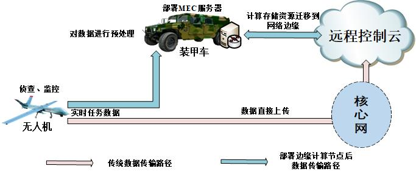
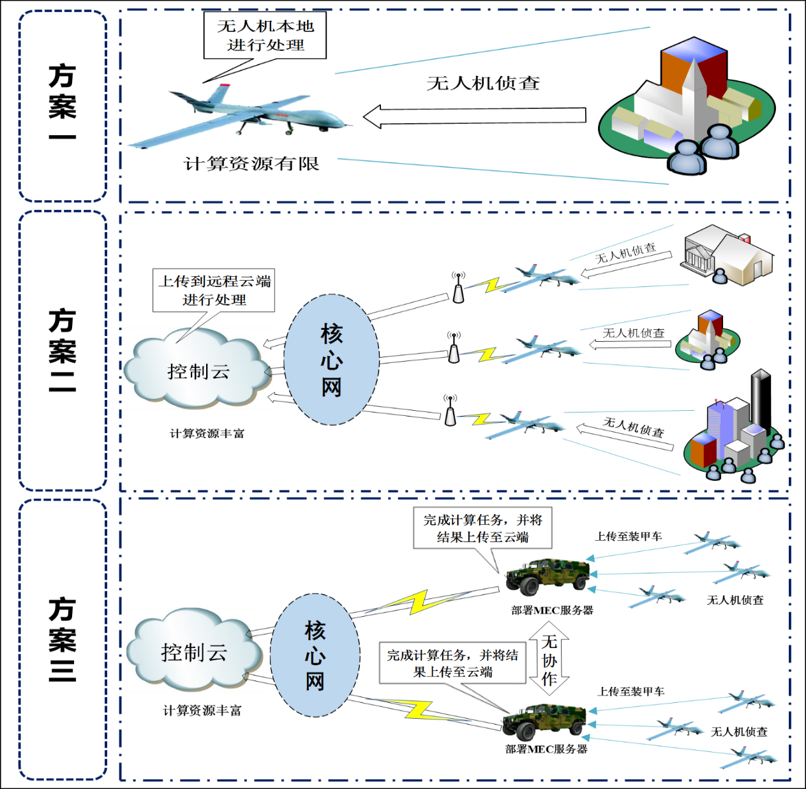
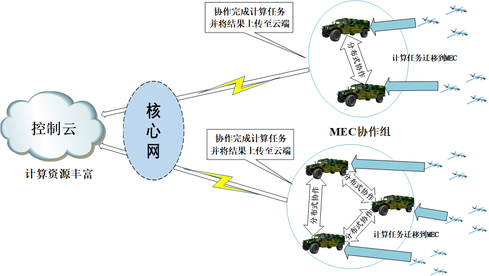
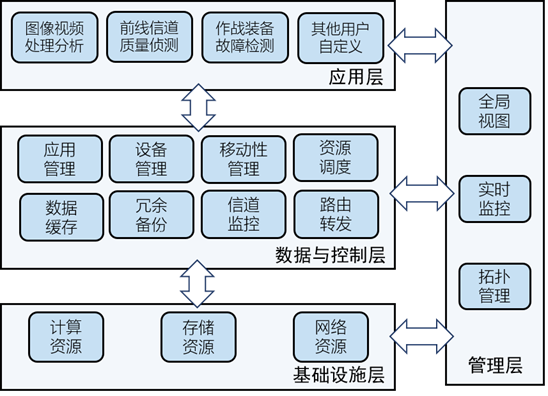
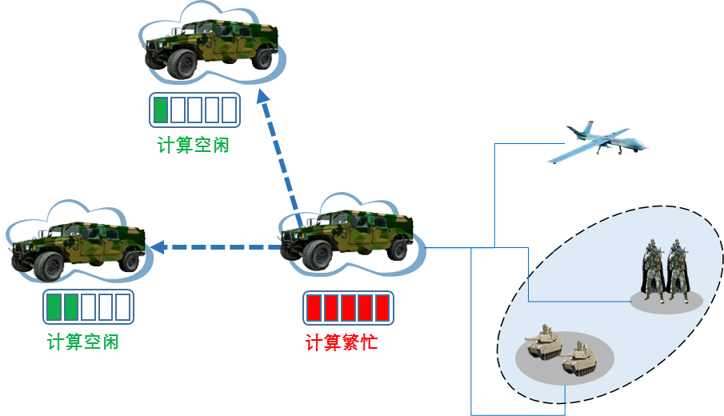
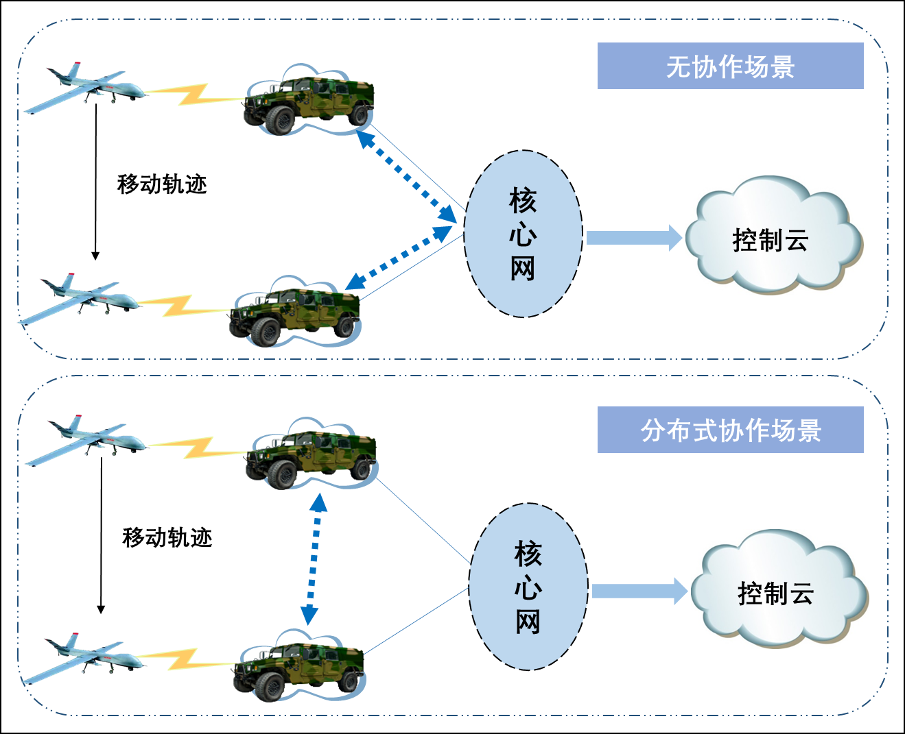
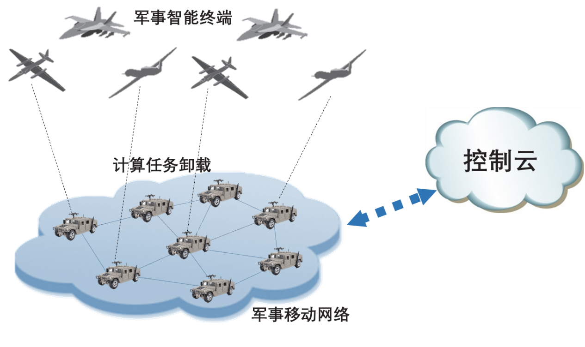
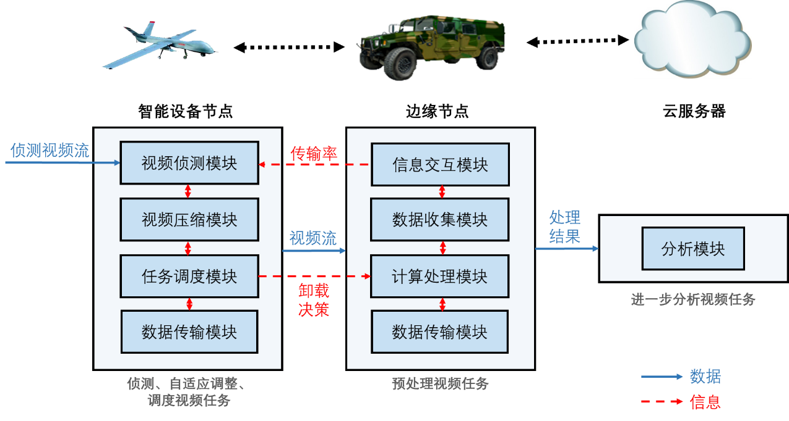

- 现状与需求
- 现有方案介绍
- 平台概述
- 关键技术
- 演示方案介绍
现状与需求
在现代化军事复杂组网环境中，由于战场情况多变，信号干扰较多，终端设备移动速度较快，传统的军事网络不仅不能很好地保证传输质量，在冲突背景下可能无法提供支撑战术作战所需的通信能力，且信息的传输时延大，任务处理的等待时间较长，同时系统整体能量消耗庞大。
此外，当今的智能化军事装备集成了大量感知和侦测装置，会产生大量的数据（比如图像、视频等）。而由于设备节点计算资源有限，在战术边缘采集的数据需要上传前沿作战基地甚至总部（即远程控制云）进行处理，这必然会影响对实时任务的分析与决策，同时，依靠远程中心统一处理会给计算设备与网络带宽带来巨大压力。
为了应对上述挑战，在网络边缘提供计算处理与数据存储的能力，即移动边缘计算技术（Moblie Edge Computing, MEC），成为军事复杂组网的重要发展趋势。边缘计算的基本思想是把云计算平台（包括计算、存储和网络资源）迁移到网络边缘，这样就能够在网络边缘提供各种服务并及时响应智能终端的请求。
如图1所示，军事终端设备（如：军事无人机）的传统通信路径是通过核心网将计算任务上传到远端控制云处进行任务处理，在引入了边缘计算之后，无人机可以将计算任务卸载到位于网络边缘的MEC服务器上处理计算任务，从而有效的降低了大量数据处理的时延和能耗。除此之外，MEC服务器上可以安装多种多样的应用程序，这些应用程序能够支持前线作战人员交流当前的最新信息，监测战斗人员的身体健康状况和设备的运行情况，或者是提供其他所需的功能。

图1 部署边缘计算网络与传统网络对比
但是现有的军事边缘网络仍然存在许多问题：
1）军事智能终端需要实时对捕获的信息进行回传处理，而终端设备所处环境通常是复杂多变的，前沿作战环境通信链路带宽相对较低且不可靠，如何解决在复杂组网环境下侦测的数据流连续不中断地回传是亟需考虑关键问题之一；
2）在军事复杂组网环境下部署的边缘计算节点通常受到功耗、体积等因素限制，装备计算能力有限，难以满足大量计算任务需求，如何设计高效的分布式协作方案，从而提高整个边缘网络的效益也是需要考虑的关键问题之一；
3）由于军事设备移动性强，在任务卸载过程中，作战人员与边缘计算节点都处于快速移动的状态，这导致军事边缘网络的状态、拓扑、连接性等特性也随之发生变化，如何在此背景下保证边缘服务的连续性，也是需要考虑的关键问题。
因此，针对上述问题与挑战，面向军事组网复杂环境，本方案提出了一种分布式的边缘计算的技术架构，进一步的提高了现有的军事边缘网络的效益，解决了在复杂多变的军事组网场景下，军事智能设备计算任务实时分析处理的问题。并提出了这一技术下的系统通信处理流程，明确了技术架构中各模块之间的通信关系及模块功能分布。基于所提出的分布式架构，本方案设计了的一种分布式边缘协作计算方案，多边缘计算节点通过分布式协作的方式共同计算和处理终端计算任务，攻克了单边缘计算节点资源受限带来的处理效率低下、高处理时延等问题。除此之外，为了解决了在复杂组网场景下由于智能设备高速移动带来的服务连续性问题，本方案提出了一种高效的面向移动服务连续性保证的移动性管理机制。
现有方案介绍

图2 现有方案架构图
在当前的军事复杂组网环境下，终端计算任务主要有三种处理方案，如图1所示:
方案一：在技术发展的最初阶段，军事智能终端例如无人机等，会直接在本地对计算任务进行处理，并将处理结果上传到远程控制云处（或直接用于本地处理）。但是随着军事网络的发展，军事智能终端的计算任务呈爆炸性增加趋势，并且出于各种军事应用的需要，军事智能终端小型化趋势愈加明显，使得终端有限的计算资源难以及时处理相应的计算任务，不仅导致了较大的处理时延，也增加了终端设备的能量消耗，极大地减少了智能终端的续航时间，无法满足相应的当前军事组网的需求。
方案二：为了解决上述问题，通过计算卸载技术，军事智能终端开始将各种计算任务先通过核心网传输到远程控制云上进行处理。这种方式下，由于控制云具有丰富的计算资源，计算任务可以得到较快的处理，大大降低了任务的处理时延及处理任务带来的计算能耗。
然而这种方案依旧存在很大的问题，将计算任务上传控制云将带来额外的传输时延以及传输能耗。除此之外，还会产生大量的网络带宽占用，给核心网带来巨大的压力。因此，控制云计算卸载方案并不能满足现代化军事复杂组网的高效、实时性需求。
方案三：在军事网络中引入MEC是应对上述问题的一种非常具有应用前景的方案。 MEC可以部署在靠近军事智能终端的位置，用于处理应用程序和服务，以及存储和处理军事智能终端上传的内容。各种军事智能终端将计算任务卸载到MEC服务器上，从而极大地减少了自身的处理能耗以及控制云卸载带来的传输能耗，且由于任务在MEC处就能得到处理，也在一定程度上降低了计算任务的传输时延，使得军事智能终端上运行实时性程序成为可能。MEC还可以为军事网络提供诸多额外的功能，比如获取军事智能终端信息并将不同军事智能终端的信息进行实时转发；在军事智能终端将大量数据回传到远程控制云之前预处理大数据，可以有效降低核心网的压力等等。
但是简单的MEC部署也存在一些问题，在这种部署方式下，不同的MEC之间没有协作，当某个MEC节点的计算资源不足时，军事智能终端上传的计算任务只能继续等待或者进一步上传到远程控制云亦或是直接丢弃，即使邻近MEC节点存在空闲的资源也不能得到有效利用。此外，当军事智能终端进行移动的过程中，如果相邻节点不存在协作机制，军事智能终端从一个MEC节点连接到另一个节点时，之前的数据只能是丢弃或者通过远程控制云重传，导致了很大的时延以及移动性管理的不便。
平台概述
1.方案架构介绍
为了解决现有军网方案中存在的诸多问题，进一步提高军事边缘网络的效益，满足现代化军事复杂组网环境的需求。面向军事场景复杂组网环境，我们提出了一种基于MEC的边缘协作计算方案。在该方案中，相邻的边缘计算节点会相互协作，共同承担军事智能终端的计算任务。这样不仅可以避免在单个平台过载时所导致的任务等待时间过久，降低任务处理时延，同时，还能使空闲的边缘计算资源得到充分的利用。总体来说，基于MEC的边缘协作计算平台方案具有以下几个突出特点：
- 低时延：实时数据分析是高动态军事组网环境中的基础需求。相比于军事智能终端将计算任务卸载到远程控制云，本方案在边缘计算节点就近为军事智能终端提供计算服务，从而大大降低了任务的传输时延。同时本方案通过协作机制将一个节点的计算任务划分到周围节点同时处理，因此本方案的任务处理时延也远低于常规边缘云方案。较低的任务传输时延和处理时延能够保证本平台满足大部分时延敏感应用的要求，保证了军事场景下军事智能终端的服务质量。
- 能量高效：大量的数据传输以及任务计算对于军事智能终端的能耗是一个巨大的挑战，传统的方案中对于能耗的考虑并不能完全满足现有军事网络场景的需求。本方案在保证服务质量的前提下，通过分布式协同和移动性管理机制显著的降低了整个边缘系统的能量消耗。分布式协同能够充分利用空闲资源，移动性管理保证了军事智能终端始终在最高效的节点进行计算任务的卸载，它们共同保证了系统高效的运行。同时由于军事智能终端将计算任务卸载到边缘计算节点而不是在本地处理，也有效的降低了军事智能终端的能量消耗，保证了军事移动终端更长的续航时间。
- 集中管理：本方案支持的集中管理包括两个部分，一部分是边缘计算节点对于本服务器的集中管理：边缘计算平台的所有资源，包括操作系统、运行的应用程序和数据，都可以通过微云系统进行集中管理；另一部分是远程控制云对于边缘计算节点的管理：远程控制云实时收集并展示边缘计算节点的信息并对节点进行管控。
为了对基于MEC的边缘协作计算平台方案进行详细全面的介绍，本章会从系统架构、功能模块和方案设计三个方面进行说明。

图3 面向军事场景复杂组网环境的边缘协作架构图
如上图所示，所提出的面向军事场景复杂组网环境的边缘协作架构主要由三层组成：智能设备层、边缘云层和控制云层。
（1）智能设备层
在网络的边缘，智能设备层是包含许多军事传感节点和军事移动设备的网络。为了监控战场上不断变化的条件和环境，这些低成本且高度可靠的传感器可以广泛分布。这些地理空间上广泛分布的传感器会产生巨大的传感数据，本层设备难以对这些数据进行高效快速的处理，所以数据层将本地捕获或产生的数据转发到边缘层和控制云层。
（2）边缘云层
该层由多个地理上分布的智能边缘服务器构成，形成边缘计算平台。边缘云层由军事网络边缘的一些具备高性能和低功耗计算能力的智能服务器（如智能装甲车等）组成。智能服务器通过微云技术对底层资源进行统一编排，按需分配给平台上的应用程序使用。边缘云层的每个边缘计算服务器与覆盖范围内的智能设备进行实时通信，由平台上的各种应用程序向智能设备提供服务。对于一些智能设备发往远程控制云的数据，边缘云层会进行预处理并将数据处理结果的输出报告给远程控制云中心。
（3）控制云层
控制云层是一个集中式云计算平台，提供城市范围的监控和集中控制，并提供了有效且大容量的分布式计算和存储，为数据分析和处理提供丰富的资源。它用于本地云执行涉及密集计算且对时延不敏感的任务。
2.功能模块介绍

图4 面向军事场景复杂组网环境的边缘协作功能模块图
面向军事场景复杂组网环境的边缘协作计算平台的功能模块如图所示，该平台攻克了用户设备服务连续性、计算任务卸载管理、多节点计算任务协作等关键技术，构建面向军事场景复杂组网环境的分布式边缘协作计算平台。由图可知，该平台的功能框架主要由四个层面构成：资源层、数据与控制层、应用层和管理层。
- 资源层：主要指的是边缘协作计算平台的底层物理资源，包括计算资源、存储资源和网络资源。计算资源主要指的是CPU和其相关资源，直接影响了平台处理计算任务的速度和数量；存储资源主要指的是硬盘存储能力，会影响平台能够承载的应用程序的数量；网络资源指的是平台和移动设备以及其他设备通信的无线资源和有线资源，如信道质量、信道带宽和发射接收功率，在军事场景的复杂组网环境中，网络资源是会根据信道的情况发生变化的，因此需要平台根据信道质量对网络资源的分配进行调整。
- 数据与控制层：边缘协作计算平台主要是对底层资源进行统一编排并给边缘计算应用程序使用，这些应用程序为移动设备提供了各种服务。数据层与控制层是边缘协作计算平台的主体，它们保证了资源分配和编排的正常并高效运行。数据层主要负责对资源层的分配和管理：资源调度会按照虚拟机的需求进行计算资源和存储资源的分配与回收；冗余备份和数据缓存主要是对平台的关键数据和边缘应用程序及其数据进行备份，以便发生错误时能够及时恢复；信道监控主要是收集信道指标并开放给应用程序查询；路由转发会对边缘应用程序的网络通信情况进行管理安排。控制层对数据层进行管理，主要包括对边缘应用程序的生命周期管理、对军事智能终端设备的接入和断开管理、移动性管理及分布式协作。移动性管理是当移动设备从一个平台的区域移动到另一个平台时，管理层为了能让设备的移动边缘服务不中断而进行的应用程序迁移，使得新平台也能够利用此应用程序服务移动设备。分布式协作使得单个平台的计算任务过重时，能通过将部分任务分给周围的平台共同处理来缩短任务处理时间。
- 应用层：主要是指运行在平台上的各类边缘应用程序，它们向网络中的移动设备和用户提供各种边缘计算服务，在此之前需要注册以使用平台的相关资源。常见的应用程序有图像视频处理应用、信道质量侦测应用和设备故障检测应用。除此之外各种应用都可以在通过注册后在平台上向用户提供服务。
- 管理层：数据与控制层主要是指的单个平台的功能，而管理层是远端的控制中心对区域内多个平台的统一管理。它的功能有全局视图、实时监控和拓扑管理。实时监控、全局视图和拓扑管理指的是管理层会实时的收集区域内各个平台的网络资源、存储资源、应用程序列表和连接信息等各种信息并加以处理呈现，同时管理层也能对这些资源和网络拓扑情况进行管理与调整。
关键技术
1.分布式边缘协作计算

图5 分布式协作计算示意图
数百万的军事移动设备、传感器为边缘云中心动态处理带来了巨大的负担，为了提高军事组网环境下边缘计算云的处理效率，本方案考虑边缘云服务器间的分布式协作计算，有效缓解在单个云服务器处因漫长的待而造成的延迟及效率低下，使军事计算任务能够得到实时处理。
在分布式的边缘协作计算方案中，相邻边缘服务器之间保持定期通信，交换节点信息，如节点当前的计算状态（已使用计算资源情况）、无线信道质量等。
当某个边缘计算服务器收到卸载的计算任务时，首先进行判断：
（1）如果本地计算资源处于空闲状态，则直接在本地对其进预处理操作，并将处理结果回传远程控制云；
（2）当判断本地边缘节点处于计算繁忙状态时，即本地计算资源无法满足当前计算任务的需求，则在本地对当前视频进行任务分割并将其分发到相邻处于空闲状态的边缘节点，多个边缘节点相互协作共同处理。
2.分布式移动性管理

图6 移动性管理示意图
在军事复杂组网中，需要考虑的关键问题之一是如何保证军事智能终端在移动过程中获得服务的连续性。当军事智能终端正在使用移动边缘平台中虚拟机进行计算任务时，如果军事智能终端的地理位置从原来的MEC服务区域移动到新的MEC服务区域，为了保证服务的可持续性，有3种选择：第1种选择是增加MEC通信设备的传输功率从而扩大通信范围，进而将离开区域的移动设备再次纳入区域，这种方法适用于用户移动速度慢且移动距离较近的情况，通常不予考虑；第2种选择是军事智能终端通过回程链路与原MEC进行通信，这适用于用户和原MEC的距离不太远的情况，以免用户获得服务的延迟过高；第3种选择是进行虚拟机迁移，原MEC将移动设备正在使用的虚拟机数据发送到新的MEC，并关闭虚拟机，新的MEC开启虚拟机接收数据，继续向用户提供计算服务。相比于第2种选择，传输虚拟机数据的成本较高，但却降低了用户获得服务的延迟。因此在实际环境中，如何从后两种选择中做出决策需要根据任务处理时延、任务传输和处理能耗等因素做出判断。
在无协作的边缘计算场景下，无论是第2种情况下的回程链路通信还是第3种情况中的数据发送，都需要经过核心网，这不仅给核心网带来了巨大的压力，也导致了很大的时延以及移动性管理的不便。而通过边缘云服务器之间的相互协作，数据迁移及通信链路维持不再需要经过核心网，只在边缘云服务器间便可实现。
演示方案介绍
基于上述面向军事场景复杂组网环境的边缘协作计算平台架构，针对军事复杂组网环境下大量侦测视频流回传应用场景，我们设计了一个军事组网环境下面向视频流的边缘协作计算方案。
监控识别程序，指的是对监控摄像头上传的视频进行实时的分析处理以求及时发现有效信息的一类应用程序。监控的目的是发现区域内敌人或者敌方设备出现等有效信息，需要对信息进行及时回传，因而对实时性要求很高，同时对于视频文件的处理又需要很多的处理资源。所以可以看出，监控识别程序是一种典型的时延敏感且资源要求高的应用程序，因而可以作为展现本平台能力的示例应用。

图7 复杂组网环境下一种面向视频流的边缘计算协作框架
如上图所示，在军事复杂组网环境中，无人机上的监控摄像头对战场进行着实时侦测。由于视频处理所需的计算资源巨大，无人机无法执行监控识别程序。而边缘计算平台的计算资源充分，所以能负责监控视频的识别处理。为了能满足监控识别程序的低延时要求，针对军事复杂组网环境下侦测视频流回传应用场景，我们设计了一个面向视频流的边缘协作计算方案。该方案通过无人机计算任务卸载和边缘平台的分布式协作，不仅大幅降低了程序处理时延，还有很好的能耗表现。

图8 复杂组网环境下一种面向视频流的边缘计算协作功能流程
在军事复杂组网场景下，无人机侦测并捕获视频序列（即视频任务），根据所处信道环境实时调整其侦测视频的码率，并将它们中的每一个划分为多个视频子任务，以视频块的形式将它们发送到边缘平台。边缘平台对接收的视频块任务进行监控识别，同时对任务进行拆分并发送到附近平台进行协作处理。最终边缘平台只向远程控制云（即控制指挥中心）上传视频预处理结果，从而降低传输时延，同时减少视频内容的冗余传输，节省网络带宽，缓解核心网络压力。